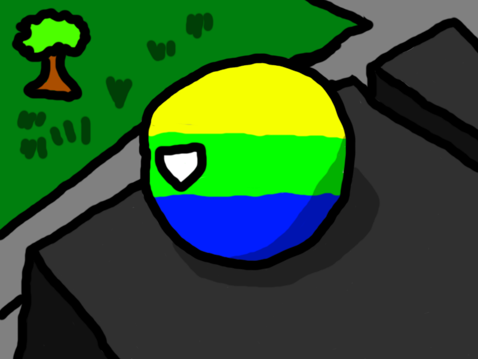

Любим и жалуем - добро пожаловать!
Этот сайт
Здорова! Этот сайт создан по тематике канала TransylvanYT0917 21 октября 2023 года (как раз в его д/р). На ютубе тогда как раз выпустилось видео по
Наш Discord сервер
Союз Советских Социалистических Республик это наш Discord сервер. Это не первый сервер (первый сервер - "FBI") из-за того, что я тогда потерял аккаунт transylvanyt0917, а потом вообще сервер взломали два-три раза. Когда я потерял аккаунт я создал сервер "FBI of USA". Потом я переименовал сервер в СССР (а также сделал надпись, что проект шуточный), но потом мы с KAPYBORO просто затимились. Потом я отказался от идеи СССР и переименовал проект в совместный (т. е. "Сервер им. Де-------ова Е. и Ко-----а Н."). После, я просто сделал "Сервер им. TransylvanYT0917". Но потом меня (мой сервер) взломал Handoun. Я был в очень большой ярости и долго ненавидел этого пранкера под эгидой oldniki. Позже я сделал идеальный сервер. Но его опять зарейдили (как же хорошо, что у меня есть скрины ролей...). На этот раз это был ArtemNaruto. Я его прощаю за всё (логично, и в этот раз я его простил). ArtemNaruto "по случайности" удалил правила, но и в этот раз я его простил.
Мой YouTube канал
TransylvanYT0917 - мой ютуб канал. Меня даже хейтели на нём (правда, это были украинцы, но это правда)! Канал создан 21 октября 2021 года и он был мёртв до 2023 года. 9 января 2023 года вышло первое залетевшее короткое видео (раньше я впринципе Shorts не снимал). Мне это задало направление куда нужно идти. Первое название этого канала написано на белорусском языке: "Вiлiкая Трансiльванiя" (хотя я считал, что написал на дорефонменном русском). Потом я сменил название на тематику канала - "Historial Shorts" не заметив маленькую ошибку в слове Historical*. Под этим названием, например, вышло короткое видео про Огайо, но не было длинных. Потом я сменил название канала с этим "суицидным" логотипом на TransylvanYT.


Я выпустил на этом названии кучу роликов, но потом я с дубу рухнул и переименовал канал в "Dastefun" как и команду (в "Dastefun-La Command"), а ещё и этот сайт. Но потом я вернул название канала на "TransylvanYT0917".